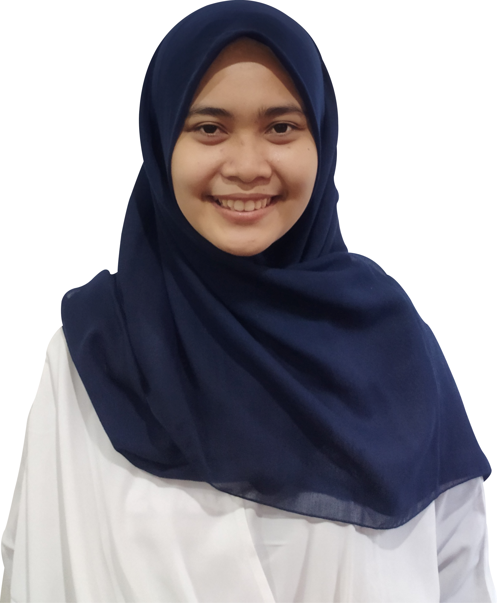

Nama lengkap saya Popy Riliandini. Lulus dari Informatika UNS Solo, Alhamdulilah. Lahir di tahun 2000 dan besar di Klaten.
Ya, karena saya kuliah di jurusan Informatika, sedikit banyak saya memiliki
latar belakag pemrograman
Bahasa yang pernah saya gunakan sebagai berikut:
Karena menarik tentu saja, rasanya menyenangkan ketika mampu membuat sebuah function untuk memecahkan problem tertentu
The one n only YOUTUBE, I love youtube so much
Kalo kalian mau tau animasi kesukaan saya, coba lihat link ini channel youtube favorit
Tujuan utama saya menjadi developer yang ahli dan dapat menjalankan dengan baik setiap project yang ada di CIMB Niaga
Saya suka ke pameran-pameran lukisan, beberapa gambar lukisan yang saya suka. Sebenarnya ada 1 lukisan yang saya suka, judulnya "Es Teh Plastik", tapi saya tidak punya gambarnya, lukisannya benar-benar realistik.